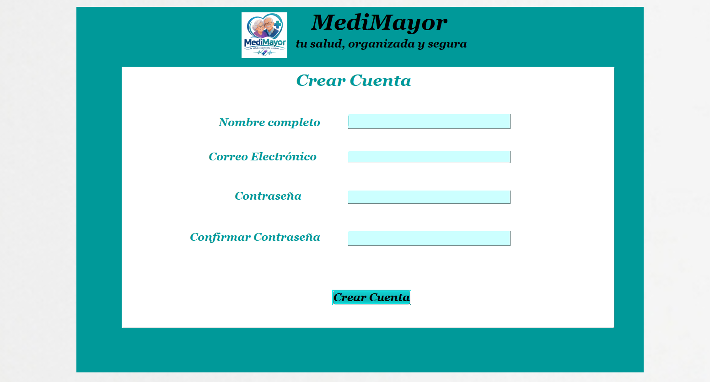
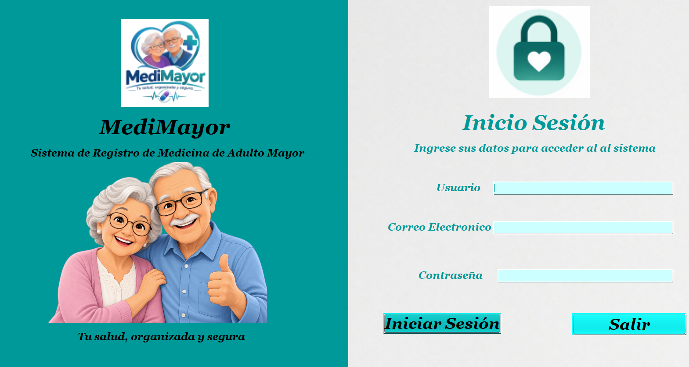
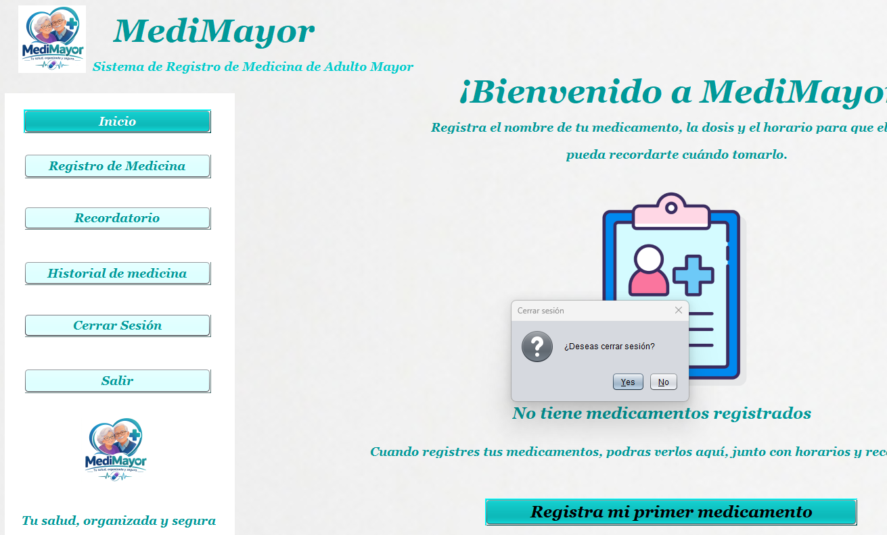
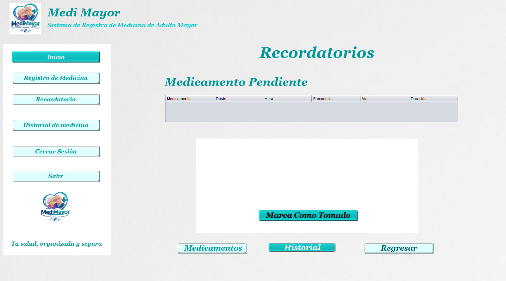
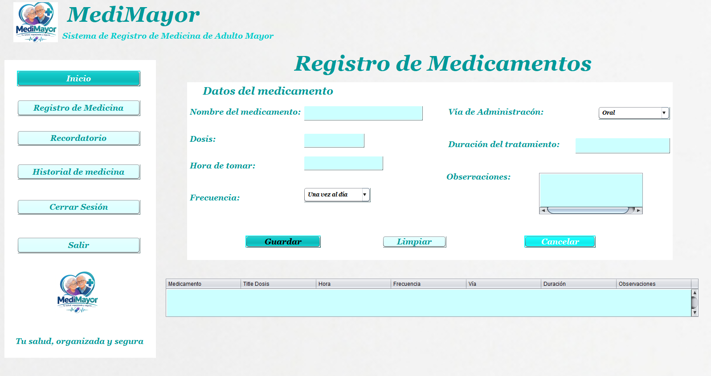
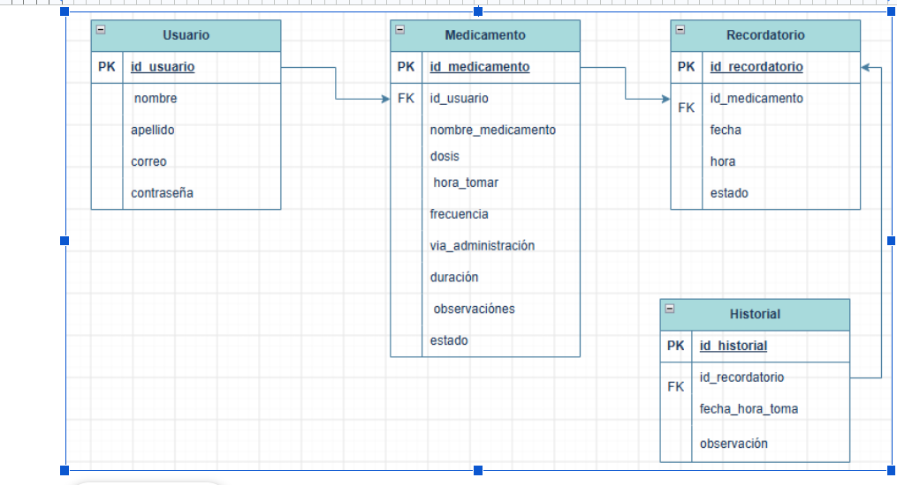
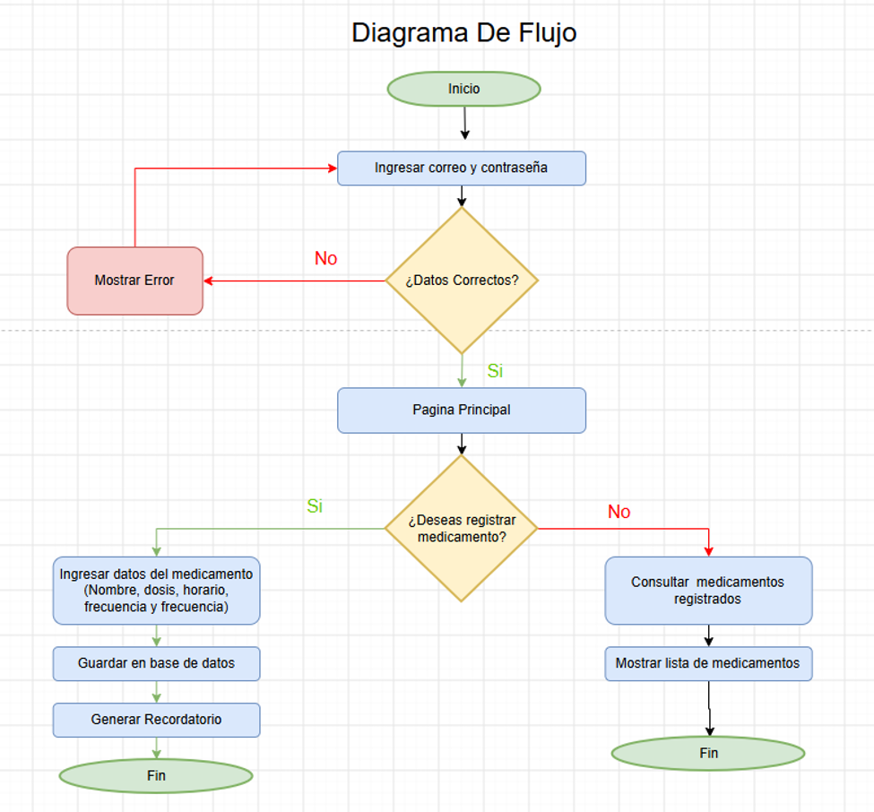
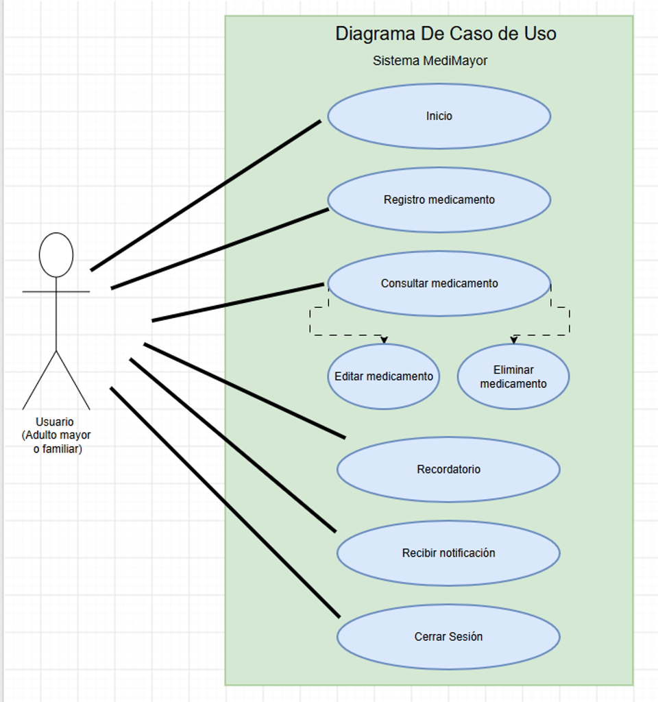

👤
Registro y login
Permite crear una cuenta e iniciar sesión.
Tu salud, organizada y segura
Sistema de registro y recordatorio de medicamentos diseñado para apoyar a los adultos mayores en la organización de sus horarios de medicación.
Conocer el proyectoRegistro organizado
Recordatorios de toma
Consulta de registros
Algunas personas adultas mayores pueden tener dificultades para recordar los horarios y la información de sus medicamentos.
MediMayor busca facilitar el registro y la organización de los medicamentos mediante un sistema informático sencillo y ordenado.
Está dirigido principalmente a adultos mayores y a las personas que los apoyan en la organización de sus medicamentos.
Desarrollar un sistema de escritorio que permita registrar y organizar información sobre medicamentos, facilitando la consulta de sus horarios y el seguimiento de sus registros.
Permitir el registro e inicio de sesión de los usuarios.
Registrar medicamentos, dosis, horarios y frecuencia.
Consultar los recordatorios y la información registrada.
Guardar los datos en una base de datos para su consulta.
Las principales áreas del sistema de escritorio.
Permite crear una cuenta e iniciar sesión.
Guarda el nombre, dosis, horario, frecuencia, vía de administración y duración.
Permite consultar los medicamentos y sus horarios registrados.
Área destinada a consultar los registros de seguimiento de medicamentos.
Permite consultar los datos de la cuenta.
MySQL almacena los datos del usuario y los medicamentos registrados.
MediMayor se desarrolló como un sistema de escritorio organizado por ventanas y conectado a una base de datos.

Acceso al sistema MediMayor.

Ingresa al sistema.

Página de inicio

Consulta de medicamentos y horarios.

Formulario para registrar los medicamentos.
Diseño y estructura del sistema.



Lenguaje utilizado para programar el sistema.
Entorno de desarrollo para crear las ventanas.
Sistema gestor de la base de datos.
Herramienta para ejecutar servicios locales y administrar el entorno de desarrollo.
Estructura de esta página informativa.
Estilos, colores y adaptación de la página web.
MediMayor puede ampliarse en el futuro para ofrecer nuevas funciones, según las necesidades de sus usuarios.
Incorporar avisos automáticos para los horarios de los medicamentos.
Adaptar el sistema para utilizarlo desde teléfonos inteligentes o tabletas.
Agregar letras más grandes, mayor contraste y una navegación todavía más sencilla.
Estudiante: Jailene Daynara Estrada González
Centro educativo: Escuela Marion G. Bock
Carrera: 6° Perito en Desarrollo de Contenido Digital y Software
Docente: PEM. Leslie Geordani Abaloni Armas
Ciclo escolar: 2026